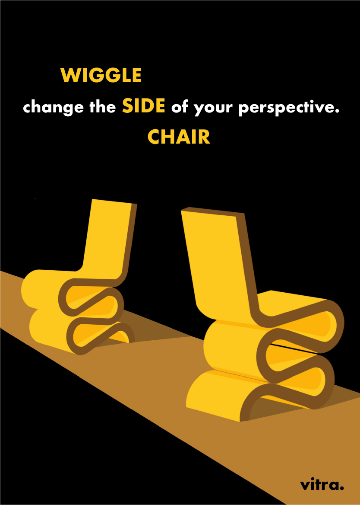

POLITECNICO DI TORINO // RAPPRESENTAZIONE DEL PROGETTO
WIGGLE SIDE CHAIR
Obiettivo del progetto è stato pubblicizzare con una serie di elaborati grafici un iconico prodotto del design internazionale. Ecco come abbiamo raccontato la storia della sinuosa Wiggle Side Chair di Frank Ghery, nata da 60 fogli di cartone ondulato pressati e rimessa in produzione da Vitra nel 1972. L'ispirazione? Proprio dei fogli di carta arrotolati abbandonati nello studio del designer. Ironico pensare che, nata per essere una sedia per tutti, sia ora un prodotto elitario.
